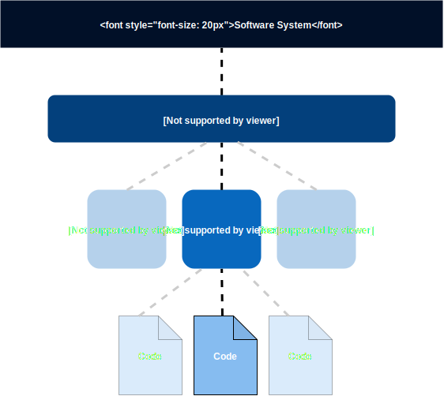
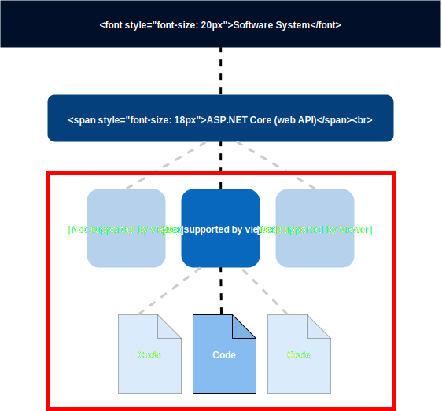

Vertical-Slice Architecture
Scope of this presentation

Scope of this presentation

Why talk about architecture on this level?
Beginning of a greenfield project
- With small amount of code 'everything' looks good
- Requirements are changing
- Temptation to just reuse template from last project
One year later
- Maintainability issues
- Extensibility issues
- Performance issues
- Bugs
- Developer unhappiness
It's too late to change it
- It would cost too much
- Heavy risk of regressions
Which software architecture is most common?
Big ball of mud
Common in practice due to business pressures, developer turnover and code entropy
Choosing right architecture from beginning is very important